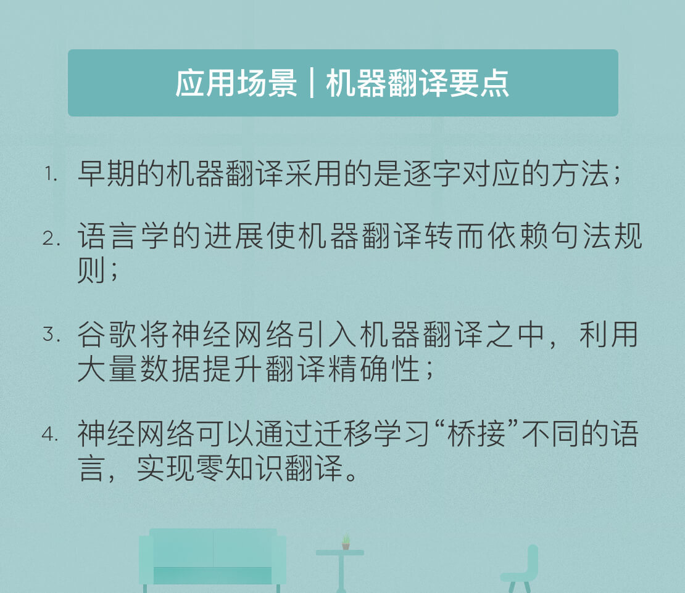

- 00 开篇词 人工智能：新时代的必修课.md.html
- 01 数学基础 九层之台，起于累土：线性代数.md.html
- 02 数学基础 月有阴晴圆缺，此事古难全：概率论.md.html
- 03 数学基础 窥一斑而知全豹：数理统计.md.html
- 04 数学基础 不畏浮云遮望眼：最优化方法.md.html
- 05 数学基础 万物皆数，信息亦然：信息论.md.html
- 06 数学基础 明日黄花迹难寻：形式逻辑.md.html
- 07 机器学习 数山有路，学海无涯：机器学习概论.md.html
- 08 机器学习 简约而不简单：线性回归.md.html
- 09 机器学习 大道至简：朴素贝叶斯方法.md.html
- 10 机器学习 衍化至繁：逻辑回归.md.html
- 11 机器学习 步步为营，有章可循：决策树.md.html
- 12 机器学习 穷则变，变则通：支持向量机.md.html
- 13 机器学习 三个臭皮匠，赛过诸葛亮：集成学习.md.html
- 14 机器学习 物以类聚，人以群分：聚类分析.md.html
- 15 机器学习 好钢用在刀刃上：降维学习.md.html
- 16 人工神经网络 道法自然，久藏玄冥：神经网络的生理学背景.md.html
- 17 人工神经网络 一个青年才俊的意外死亡：神经元与感知器.md.html
- 18 人工神经网络 左手信号，右手误差：多层感知器.md.html
- 19 人工神经网络 各人自扫门前雪：径向基函数神经网络.md.html
- 20 人工神经网络 看不见的手：自组织特征映射.md.html
- 21 人工神经网络 水无至清，人莫至察：模糊神经网络.md.html
- 22 深度学习 空山鸣响，静水流深：深度学习概述.md.html
- 23 深度学习 前方有路，未来可期：深度前馈网络.md.html
- 24 深度学习 小树不修不直溜：深度学习中的正则化.md.html
- 25 深度学习 玉不琢不成器：深度学习中的优化.md.html
- 26 深度学习 空竹里的秘密：自编码器.md.html
- 27 深度学习 困知勉行者勇：深度强化学习.md.html
- 28 深度学习框架下的神经网络 枯木逢春：深度信念网络.md.html
- 29 深度学习框架下的神经网络 见微知著：卷积神经网络.md.html
- 30 深度学习框架下的神经网络 昨日重现：循环神经网络.md.html
- 31 深度学习框架下的神经网络 左右互搏：生成式对抗网络.md.html
- 32 深度学习框架下的神经网络 三重门：长短期记忆网络.md.html
- 33 深度学习之外的人工智能 一图胜千言：概率图模型.md.html
- 34 深度学习之外的人工智能 乌合之众的逆袭：集群智能.md.html
- 35 深度学习之外的人工智能 授人以鱼不如授人以渔：迁移学习.md.html
- 36 深度学习之外的人工智能 滴水藏海：知识图谱.md.html
- 37 应用场景 你是我的眼：计算机视觉.md.html
- 38 应用场景 嘿, Siri：语音处理.md.html
- 39 应用场景 心有灵犀一点通：对话系统.md.html
- 40 应用场景 数字巴别塔：机器翻译.md.html
- 一键到达 人工神经网络复习课.md.html
- 一键到达 应用场景复习课.md.html
- 一键到达 数学基础复习课.md.html
- 一键到达 机器学习复习课.md.html
- 一键到达 深度学习之外的人工智能复习课.md.html
- 一键到达 深度学习复习课.md.html
- 一键到达 深度学习框架下的神经网络复习课.md.html
- 推荐阅读 我与人工智能的故事.md.html
- 新书 《裂变：秒懂人工智能的基础课》.md.html
- 直播回顾 机器学习必备的数学基础.md.html
- 第2季回归 这次我们来聊聊机器学习.md.html
- 结课 溯洄从之，道阻且长.md.html
- 课外谈 “人工智能基础课”之二三闲话.md.html
- （课外辅导）人工神经网络 拓展阅读参考书.md.html
- （课外辅导）数学基础 拓展阅读参考书.md.html
- （课外辅导）机器学习 拓展阅读参考书.md.html
- （课外辅导）深度学习 拓展阅读参考书.md.html
- 捐赠
40 应用场景 数字巴别塔：机器翻译
根据圣经旧约《创世纪》中的记载，大洪水劫后，诺亚的子孙们在巴比伦附近的示拿地定居。说着同样语言的人类联合起来兴建巴别塔，这让上帝深为他们的虚荣和傲慢而震怒。于是他悄悄地离开天国来到人间，变乱了人类的语言，无法交流的人们做鸟兽散，巴别塔的伟念也就轰然倒塌。
圣经中对语言诞生的描述充满了天谴的色彩，虽然事实根本就不是这么回事，但语言的差异的的确确给人类的沟通与交流平添了诸多隔阂。难道伟大的巴别塔注定只是存在于幻想之中的空中楼阁吗？
令人沮丧的是，眼下这个问题的答案还是“是”。但在世界首台计算机ENIAC于1946年诞生后，科学家们就提出了利用计算机实现不同语言之间的自动翻译的想法。而在经历了超过一个甲子的岁月后，机器翻译已经取得了长足的进展，今天的执牛耳者则无疑是互联网巨头谷歌。
机器翻译源于对自然语言的处理。1949年，洛克菲勒基金会的科学家沃伦·韦弗提出了利用计算机实现不同语言的自动翻译的想法，并且得到了学术界和产业界的广泛支持。韦弗的观点也代表了当时学术界的主流意见，就是以逐字对应的方法实现机器翻译。
语言作为信息的载体，其本质可以被视为一套编码与解码系统，只不过这套系统的作用对象是客观世界与人类社会。将字/词看成构成语言的基本元素的话，每一种语言就都可以解构为所有字/词组成的集合。而引入中介语言可以把所有语言的编码统一成为用于机器翻译的中间层，进而实现翻译。
比方说，同样是“自己”这个概念，在汉字中用“我”来表示，在英语中则用“I”来表示，机器翻译的作用就是在“我”和“I”这两个不同语言中的基本元素之间架起一座桥梁，实现准确的对应。
然而乐观和热情不能左右现实存在的客观阻力。今天看来，这样的一一对应未免过于简单。同一个词可能存在多种意义，在不同的语言环境下也具有不同的表达效果，逐字对应的翻译在意义单一的专业术语上能有较好的表现，但在日常生活的复杂语言中就会演化为一场灾难。
但天无绝人之路，进入二十世纪七十年代后，全球化浪潮的出现催生了客观需求，计算机性能的发展则突破了技术瓶颈，这两点让机器翻译重新回到人们的视野之中。
这一时期的机器翻译有了全新的理论基础：语言学巨擘诺姆·乔姆斯基在其经典著作《句法结构》（Syntactic Structures）中对语言的内涵做了深入的阐述，他的核心观点是语言的基本元素并非字词，而是句子，一种语言中无限的句子可以由有限的规则推导出来。
语言学的进化也对机器翻译的方法论产生了根本性的影响：韦弗推崇的基于字/词的字典匹配方法被推翻，基于规则的句法分析方法粉墨登场。这里的“规则”指的是句法结构与语序特点。
显然，基于规则的机器翻译更贴近于人类的思考方式，也就是把一个句子视为整体，即使进行拆分也并不简单地依赖字词，而是根据逻辑关系进行处理。这使得人类翻译非常灵活，即使是不服从语法规则，甚至存在语病的句子都可以翻译得准确无误。
正因如此，基于规则的机器翻译甫一诞生便受到众多推崇，似乎成为一劳永逸的不二法门。可理想虽然丰满，现实却依然骨感。基于句法规则的机器翻译也很快遇到了新问题：在面对多样句法的句子中，并没有比它的字词前任优秀多少，任何一款翻译软件都没法把“我勒个去”翻译成“Oh my God”。
基于规则的窘境迫使研究者们重新思考机器翻译的原则。语言的形成过程是自底向上的过程，语法规则并不是在语言诞生之前预先设计出来的，而是在语言的进化过程中不断形成的。这促使机器翻译从基于规则的方法走向基于实例的方法：既然人类可以从已有语言中提取规则，机器为什么不能呢？眼下，基于深度学习和海量数据的统计机器翻译已是业界主流，谷歌正是这个领域的领头羊与先行者。
在基于神经机器翻译（Google Neural Machine Translation）的算法横空出世之前，谷歌翻译也经历了超过十年的蛰伏。自2001年诞生后，谷歌翻译就一直在不温不火的状态中挣扎。直到痛定思痛的高层变换思路，将技术团队中的主要力量从原本的语言学家替换为计算机科学家。这意味着机器翻译的实现理念从句法结构与语序特点的规则化解构转换为对大量平行语料的统计分析构建模型，曙光才出现在地平线上。
神经机器翻译最主要的特点是整体处理，也就是将整个句子视作翻译单元，对句子中的每一部分进行带有逻辑的关联翻译，翻译每个字词时都包含着整句话的逻辑。用一个不甚恰当的类比来描述：如果说基于短语的翻译结果是庖丁解牛得到的全牛宴，神经机器翻译的结果就是最大程度保持原貌的烤全牛。
在结构上，谷歌的神经机器翻译建立了由长短期记忆层构成了分别用于编码和译码的递归神经网络，并引入了注意力机制和残差连接，让翻译的速度和准确度都能达到用户的要求。编码器和译码器都由8个长短期记忆层构成，两个网络中不同的长短期记忆层以残差连接。编码器网络的最底层和译码器网络的最顶层则通过注意力模块进行连接，其作用在于使译码器网络在译码过程中分别关注输入语句的不同部分。
在输出端，译码器网络选择一个使特定目标函数最大化的序列作为翻译的输出。谷歌采用波束搜索技术来选取最优的输出序列，并使用覆盖率惩罚和长度正则化来优化搜索过程。覆盖率惩罚的作用是保证输入语句中每个部分都有对应的输出结果，避免漏译情况的发生；长度正则化则可以控制输出语句的长度：如果没有这一处理，译码器网络将优先选择较短的序列作为输出。
出于效率的考虑，神经机器翻译同时使用了数据并行计算和模型并行计算。数据并行计算的作用在于并行训练模型的多个副本，模型并行计算的作用则在于提升每个副本中梯度计算的速度。此外，谷歌还在精确性和速度之间做出了一些折中，利用量化推断技术降低算术计算的精确性，以换取运行速度的大幅度提升。
在提出神经机器翻译仅仅两个月后，谷歌又提出了“零知识翻译”的概念。这一系统在前文系统的基础上更进一步，只用一套模型便可以实现103种不同语言的互译，这无疑意味着系统通用性的极大提升：一个神经网络以任何语言作为输入并转换成任何输出语言，而不需要任意输入-输出语言之间的两两配对。换言之，谷歌实现了一把解锁不同语言的万能钥匙，这一通用的解决方案对机器翻译而言无疑具有里程碑式的意义。
这一多语种互译系统是对原始系统改进的结果，它并未修改基础系统的模型架构，而是在输入语句之前人为地添加标志以确定翻译的目标语言。通过共享同一个词胞数据集，这一单个模型就能够在不添加额外参数的前提下实现多语种的高质量互译。
虽然在模型训练的过程中不可能将每种语言都纳入数据库，但互译系统可以通过特定的“桥接”操作实现对在训练过程中没有明确遇见过的语言对之间的互相翻译，这也就是“零知识翻译”的含义。
零知识翻译的实现要归功于神经网络的迁移学习特性。“桥接”操作即是在两种陌生的语言中引入一种其他语言作为中介，用英文“桥接”起西班牙文和葡萄牙文的互译意味着现将输入的西班牙文翻译为英文，再将英文的中间结果转译为葡萄牙文。这种方式无疑会使翻译的时间翻倍，而额外的转译过程也可能造成原意的偏离。
但它的优势同样明显，那就是无需对两种陌生语言进行训练。要知道，如果对任意两种语言构成的输入-输出对进行训练，要训练的模型数目将达到\(100 ^ 2 = 10000\)的级别；而对所有语言的翻译使用英语作为中介的话，要训练的模型数目将只有\(100 \\times 2 = 200\)，后者在工程上实现的难度显然远远小于前者。
除了在实际翻译中的应用，零知识翻译还提供了关于语言本身更深层次上的洞见，系统是否自行生成了一种语义表征体系？语言和文字本身就可以视为对客观世界进行编码的系统。而在转译的过程中，神经网络并非简单地记忆不同短语之间的映射关系，而是直接对句子的语义进行重新编码。这套由神经网络自主研发的语义系统被谷歌称为“国际通用语”（interlingua）。某种意义上讲，这才是真正的“世界语”，而这一现象对未来语言学发展的影响同样值得关注。
虽然谷歌在机器翻译领域取得了令人侧目的成就，但实话实说，机器翻译的准确率依然处在较低的水平上，甚至经常出现一些令人啼笑皆非的结果。但它代表的是人类相互尊重、相互理解的热切渴求。有了海量的数据和先进的算法，这些曾经遥远的愿景与渴求正在变得触手可及。
今天我结合谷歌公开发表的论文，和你分享了机器翻译的发展历程与一些最新进展。其要点如下：
- 早期的机器翻译采用的是逐字对应的方法；
- 语言学的进展使机器翻译转而依赖句法规则；
- 谷歌将神经网络引入机器翻译之中，利用大量数据提升翻译精确性；
- 神经网络可以通过迁移学习“桥接”不同的语言，实现零知识翻译。
在另一个角度上，机器翻译的进展对语言本身的发展也存在着反作用。语言并不是自然出现的，而是人类社会的产物，其发展也势必会受到人类文化的影响。那么人工智能的发展到底会对人类自身产生何种反作用呢？
这是人工智能的终极问题。

下周二，3月13日 20:30，我会在极客时间做一场直播，主题是“人工智能必备的数学基础”，带你梳理专栏的第一个模块，希望能够解答一些你在这一模块的疑惑。
关于数学基础你还有哪些问题，欢迎你给我留言，我们直播见！
© 2019 - 2023 Liangliang Lee. Powered by gin and hexo-theme-book.